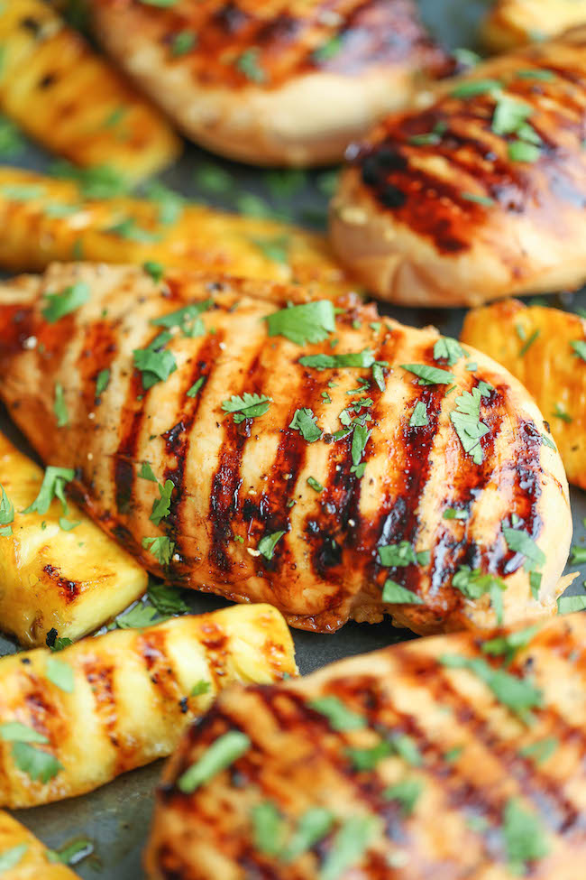

Hawaiian Chicken

Description
Sweet and tangyChicken breasts grilled to absolute perfection with caramelized brown sugar pineapple!
Ingredients
- 1/4 cup reduced sodium soy sauce
- 1/4 cup pineapple juice
- 1/4 cup brown sugar
- 2 tablespoons ketchup
- 3 cloves garlic, minced
- 1 tablespoon freshly grated ginder
- 1 teaspoon sesame oil
- 4 boneless, skinless chicken breasts
- 2 tablespoons chopped fresh cilantro leaves
- 1 large pineapple, peeled, cored and cut into 8 to 10 wedges
Steps
- In a medium bowl, whisk together soy sauce, pineapple juice, brown sugar, ketchup, garlic, ginger, sesame oil
- Reserve 1/4 cup of the previous mixture and set aside
- In a gallon size Ziploc bag or large bowl, combine soy sauce mixture and chicken
- Marinate for at least 1 hour to overnight, turning the bag occasionally
- Drain the chicken from the marinade
- In another gallon size Ziploc bag or large bowl, combine the pineapple and 1/4 cup brown sugar
- Preheat grill to medium high heat
- Add the chicken and pineapple to grill and cook
- Flip once and then add the reserved 1/4 cup marinade until cooked
- It should take about 5-6 minutes per side
- Serve immediately garnished with cilantro